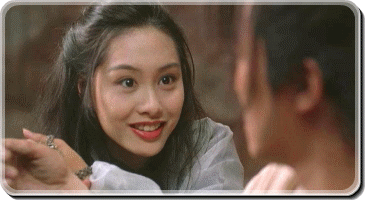

这里是定义的段落样式
松散段落样式
紧致段落样式
边框collapse的table| Firstname | LastName |
|---|---|
| Xiaoming | Wang |

话说孙悟空护送唐三藏去西天取经，半路却和牛魔王合谋要杀害唐三藏，并偷走了月光宝盒。观音大士闻讯赶到，欲除掉孙悟空以免危害苍生。唐三藏慈悲为怀，愿意一命赔一命，观音遂令悟空五百年后投胎做人，赎其罪孽。五百年后的一天，五岳山下的大漠之上风沙漫漫，突然来了一个奇怪的女客春三十娘（蓝洁瑛饰）。众人在斧头帮二当家（吴孟达饰）带领下欲行抢劫，反被她制住。匪头至尊宝（周星驰饰）率众复仇失败，春三十娘勒令群匪找一个脚底有三颗痣的人。晚上至尊宝等欲用迷香加害春三十娘，却令其现出蜘蛛精的真身。至尊宝孤身潜入春三十娘的房中，发现多了一个白晶晶（莫文蔚饰），至尊宝对她一见钟情。二当家夜探二女，查出原来春三十娘是蜘蛛精，白晶晶是白骨精，她们从菩提老祖那里得知唐三藏将会出现在五岳山，为了吃